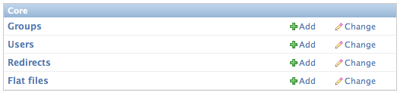
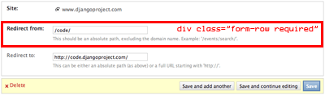

Warning
O design da administração mudou um pouco desde que a documentação foi escrita, e algumas partes podem não se aplicar mais. Este documento não é mais mantido, uma vez que uma API para customização da interface de administração do Django está em desenvolvimento.
A interface de administração dinâmica do Django oferece uma administração gratuíta, plenamente funcional, sem a necessidade de escrita de código. A administração dinâmica é projetada para estar pronta para produção, não somente um ponto de partida, então você pode usá-la em um site real. Embora o formato subjacente do admin seja construído em páginas do Django, você pode customizar o visual editando os estilos e imagens.
Eis uma breve visão sobre alguns dos principais estilos e classes utilizadas no CSS do admin do Django.
A classe .module é um bloco de construção básico para agrupar conteúdos no admin. Ela geralmente é aplicada em um div ou um fieldset, envolvendo os conteúdos do grupo em uma caixa e aplicando certos estilos sobre os elementos internos. Um h2 dentro de um div.module irá alinhar-se ao topo do div como um cabeçalho para o grupo inteiro.
Note
Todas as páginas do admin (exceto o dashboard) são largura fluída (se ajustam ao navegador). Todas as classes de largura fixa de versões anteriores do Django foram removidas.
O template base para cada página admin possui um bloco que define a estrutura de colunas da página. Ele configura uma classe na área de conteúdo da página (div#content) de modo que tudo dentro da página sabe quão largo deve ser. Existem três tipos de colunas disponíveis.
Por exemplo, você pode colocar isto em um template para fazer uma página de duas colunas, com uma coluna lateral à direita:
.. code-block:: html+django
{% block coltype %}colMS{% endblock %}
A maioria dos elementos HTML (cabeçalhos, listas, etc.) possui um tamanho de fonte básico, de acordo com o contexto de estilos. Existem três classes disponíveis para forçar um texto a ter um certo tamanho em qualquer contexto.
Existem também alguns poucos para estilizar textos.
Algumas ações que se aplicam diretamente a objetos são usadas em páginas de formulário e de listagens. Estas aparecem em uma "barra de ferramentas" acima do formulário ou listagem, à direita da página. As ferramentas ficam envolvidos em um ul com a classe object-tools. Há dois tipos de ferramentas customizadas que podem ser definidas com uma classe adicional sobre o a para a ferramenta. São elas .addlink e .viewsitelink.
Exemplo de uma página de listagem:
<ul class="object-tools">
<li><a href="/stories/add/" class="addlink">Adicionar redirecionador</a></li>
</ul>
and from a form page:
<ul class="object-tools">
<li><a href="/history/303/152383/">History</a></li>
<li><a href="/r/303/152383/" class="viewsitelink">View on site</a></li>
</ul>
Os formulários do admin são separados em grupos por meio de elementos fieldset. Cada fieldset de formulário deve ter uma classe .module. Cada fieldset deve também ter um cabeçalho h2 dentro e no topo (exceto o primeiro grupo do formulário, e em alguns casos onde o grupo de campos não possui uma nomenclatura lógica).
Cada fieldset pode ainda receber classes extras, além de .module para aplicar a formatação apropriada para o grupo de campos.
Cada linha do formulário (dentro de um fieldset) deve estar em um div com a classe form-row. Se o campo na linha é obrigatório, a classe required também deverá ser adicionada ao div.form-row.
As labels de formulários devem sempre preceder o campo, exceto no caso de ser um checkbox ou radio, onde o input deve vir primeiro. Qualquer explicação ou texto de ajuda deve seguir o label em um p com a classe .help.
Dec 26, 2011